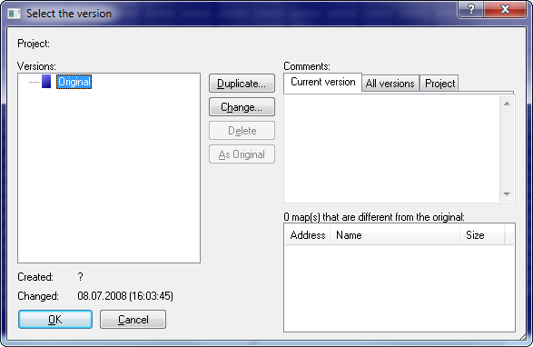
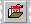

|
The dialog Open version (Menu Project) |

  
|
|
The dialog Open version (Menu Project) |
|

This dialog allows you to select and manage the versions of a project. With the buttons of the same name you may duplicate version, change their descriptions or delete them. You can drag+drop versions in the tree to change the version folders.
Versions that are already open are printed in bold.
Use the button ‘As original’ to convert the selected version into the original version. As a consequence all future comparisons will use this version. The former original version will not be deleted; it will be stored in place of the currently selected version. This function swaps the hexdump data, but not the additional version information.
The button ‘Swap’ can be clicked if two versions are selected (for example by ctrl+mouseclick). Use it to swap the selected versions. This function swaps both the hexdump data and all additional version information.
Furthermore you may view and edit comments for all versions and for the project itself on the upper right corner of the dialog. Use the tabs the select the comment that is currently displayed. You may also view (but not edit) a summary of all comments
In the lower right corner a list is displayed. It contains all maps which are changed in this version from the original version. It will automatically be generated and cannot be edited.
Version folders:
By default versions are simply listed, but you can also use version folders to organize them. This has no influence on the program behavior, but only affects the display of the version list.
Any version can serve as folder to another version. Furthermore you can use abstract folders (which are just folders, but not a version) which can also contain other versions. To change the version folders, simply drag a version to another place in the open version dialog or edit the version properties and change the parent folders. To get a version back to the top level, simply drag it far to the left.
You can sort the version tree using the tabs. If you hold down the Ctrl key while clicking, the tree is not flattened into a list.
Shortcuts:
| Symbol bar: |  |
| Keyboard: | Ctrl+Shift+O |
Note:
If the hotkey doesn't work, a graphic card software is reserving it. Test it on F12>Debug.